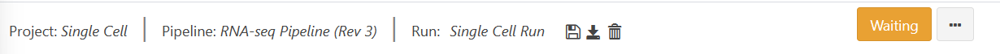
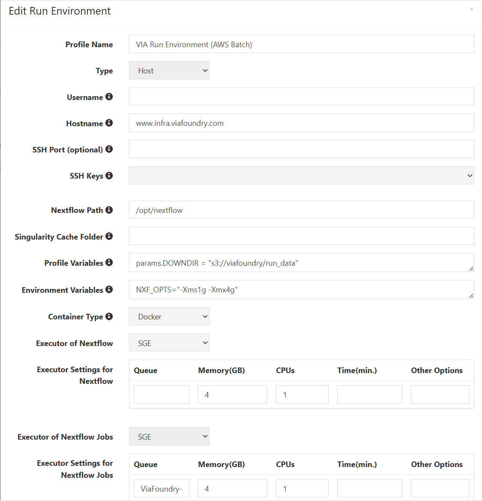
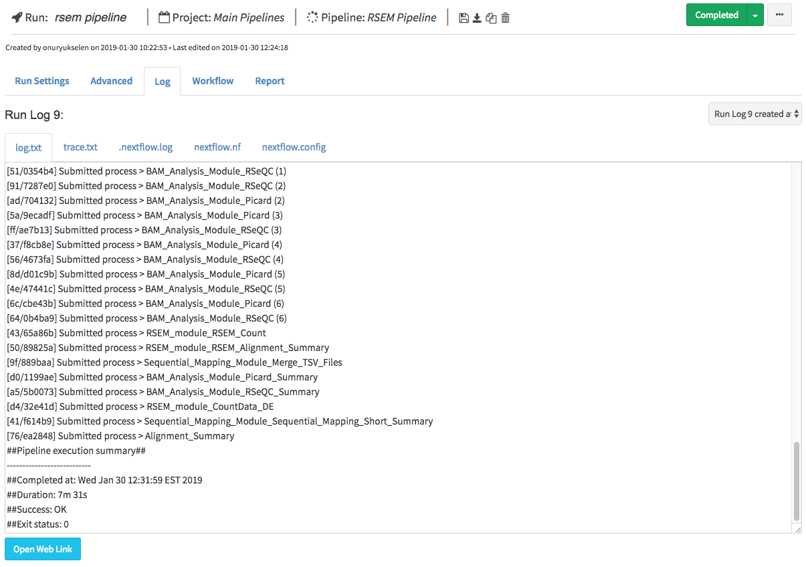
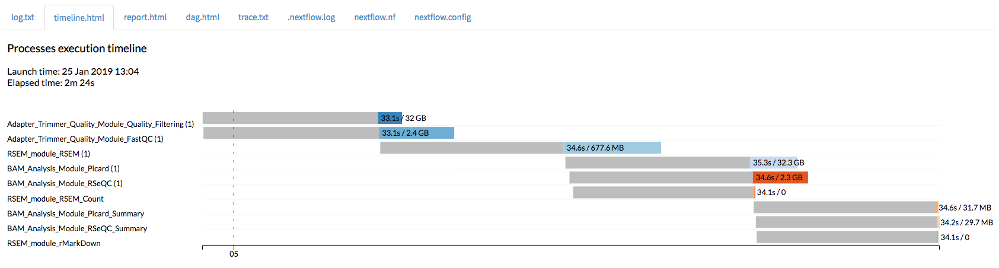
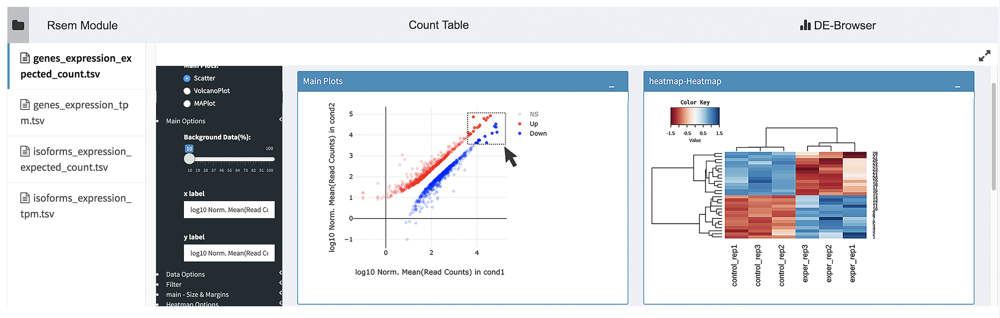
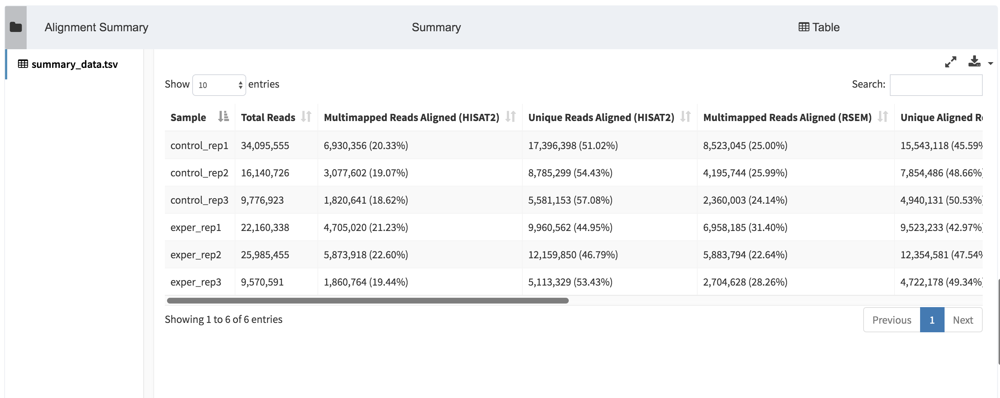
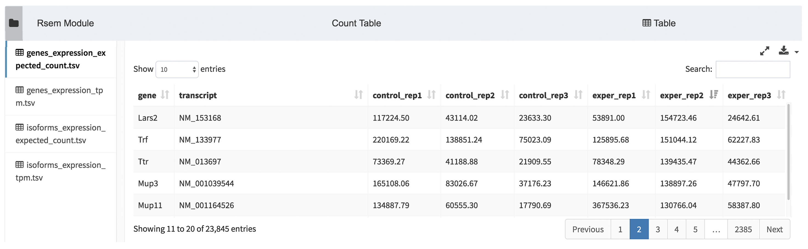

Run Guide
In the previous tutorial (Project Guide), we went through the process of creating a project within the Via Foundry (formerly DolphinNext) platform and adding pipelines to it. In this guide, we will look through all the relevant run settings needed to initiate a new run.
Brief Refresher
To access a run page, navigate to the project the run is housed within
by clicking on the appropriate project name in the Project dropdown
menu. On the Dashboard page, under the Analysis section, click the
name of your run.
Basics
On the run page's header, you can see the names of the current project, pipeline being used, and run in progress. Ensure that you're in the right project and running the correct pipeline before proceeding.

As you can see, Save Run, Download Pipeline, and Delete Run icons
are conveniently placed next to the information mentioned above in the
run page's header. Additionally, you can find Delete Run,
Duplicate Run, and Move Run options by clicking on the three dots
next to the status indicator.
Run Status
The status of your current run is displayed at the far right of the run
page's header. Initially, you'll see an orange Waiting button. In
order to initiate a run, the following data need to be entered:
- Work Directory: Full path of the directory where Nextflow runs will be executed.
- Run Environment: The environment, discussed in the profile page, within which you'd like to conduct your run. If an Amazon profile or a Google profile is selected, then the status of the profile should be Running.
- Inputs: Various values and filepaths, specifying which data will be processed and how (i.e. whether single-end vs. paired-end data are being used), need to be entered in the Run Settings page. For additional information, please check the Adding Files section.
More details on the data that must be entered prior to a run can be found in the Run Settings section of this page.
All possible status messages are listed here:
| Status | Meaning |
|---|---|
| Waiting | Waiting for inputs, output directory and selection of active run environment |
| Ready | Ready to initiate run |
| Connecting | Sending SSH queries to selected host system |
| Waits | Job is submitted, waiting for run execution |
| Running | Nextflow has executed and is running the jobs. |
| Completed | The Nextflow job is completed. |
| Run Error | Error occurred before submitting the jobs or while executing the jobs. |
| Terminated | User terminated the run by using the Terminate Run button. |
Run Settings
-
Run Environment: The environment, discussed in the profile page, within which you'd like to conduct your run. Edit this via the dropdown menu on the Run Settings page.
-
Inputs: A suite of settings governing how your data will be processed during the run. Enter information like the path of your reads and whether you want to run various data-filtering packages by clicking on the appropriate dropdown menus.
-
Work Directory: Full path of the directory where Nextflow runs will be executed. Example path:
/home/newuser/workdir
Advanced Options
-
Run Command (optional): You may run the command or commands (by seperating each command with
&&sign) before the nextflow job starts, e.g.:source /etc/bashrc && module load java/1.8.0_31 && module load bowtie2/2.3.2 -
Publish Directory: The Work Directory also serves as the default directory to which output files are sent for Via Foundry runs. If you want to change the path to a different directory, just enter the full path of your desired Publish Directory in this box. Local paths (eg.
/home/user/test), Amazon S3 paths (eg.s3://yourbucket/test) or Google Storage paths (eg.gs://yourbucket/test) are all accepted. -
Use Docker Image: Nextflow supports the use of Docker containers, which allow you to create fully reproducible pipelines. Docker images can contain whatever software you might need to execute your pipeline. It works transparently, and it creates output files in the host system without requiring any additional steps. The only requirement is that you install Docker first. To use Docker for a Via Foundry run, just click the
Use Docker Imagecheckbox (selected by default) and enter the following information:-
Image: Docker image name. Example:
public.ecr.aws/t4w5x8f2/viascientific/rnaseq:4.0 -
RunOptions (optional): You can enter any command line arguments supported by the Docker run command. Please click this Docker link for details on how you can configure this section.
-
-
Use Singularity Image: Instead of Docker, you can activate a Singularity image if you wish by clicking the
Use Singularity Imagecheckbox and entering the relevant information, expounded upon below. In order to use a Singularity image, you must first install Singularity.- Image: Path to your desired Singularity image. For example:
shub://UMMS-biocore/singularitysc /project/umw_biocore/singularity/UMMS-Biocore-singularity-master.simg- RunOptions (optional): You can enter any command line
options supported by the
Singularity exec. For instance, you can mount directories by using--bind command. See below for an example of the bind command, and please click this link for more details about the command line arguments Singularity supports.
> --bind /project:/project --bind /nl:/nl --bind > /share:/shareTip: Mounting directories in Singularity requires you to create the directories in the image beforehand.
-
Executor Settings: A series of parameters governing the execution of your run, including what packages to run and how much processing power to allocate to each package.
1. Executor Settings for Nextflow (navigate to Profile --> Run Environments --> Edit Run Environment): You can determine the system where Nextflow itself is initiated. Currently, Via Foundry supports the initiation of Nextflow via Local, SGE, SLURM and LSF executors, which will be only used for running Nextflow itself. Suggested parameters: long 8GB 1CPU 5000-8000min
2. Executor of Nextflow Jobs (navigate to Profile --> Run Environments --> Edit Run Environment): This setting will be used if you don't manually set any parameters in the Advanced section of your run page. If any option other than Local is selected, you'll be prompted to input values for
Queue,Memory(GB),CPUandTime(min.). You can adjust these parameters as you wish. Suggested parameters: short 20GB 1CPU 240min
3. Executor Settings for All Processes (in
Advancedtab of run page): This setting will overwrite the parameters entered in "Executor of Nextflow Jobs". Suggested parameters: short 20GB 1CPU 240min4. Executor Settings for Each Process (in
Advancedtab of run page): If a particular process needs special parameters other than Executor settings for all processes, you can override the default parameters by clicking on the checkbox corresponding to the process that you want to change. This will only affect the settings of the selected process while retaining the original settings for all other processes. Suggested parameters: long 20GB 4CPU 1000-5000min -
Delete intermediate files after run: By default, Via Foundry deletes any non-output files created during a run, only retaining the necessary output files in the Work/Publish Directories. This setting is aimed at minimizing the storage required for a project, but you can uncheck the box to keep all intermediate files.
-
Permissions and Groups: By default, all new runs can only be seen by their owner. However, you can share your run with a group by changing permissions to "Only my group" and choose the group you want to share with from the
Group Selectiondropdown.
Workflow
To provide a visualization of the current run's architecture, the selected pipeline and its modules are showed on this page. To see more information about the pipeline's settings, click the Go to Pipeline link at the top of this page.
Run Logs
This section keeps track of each run. You can monitor each stage of the run both before and after Nextflow execution, as shown here:

You can view various log files, such as timeline.html, dag.html, trace.txt, .nextflow.log, nextflow.nf, nextflow.config, as shown here:
- timeline.html:

- dag.html:

- trace.txt:

- .nextflow.log:

- nextflow.nf:

- nextflow.config:

If an error occurred at any point during the run, a detailed explanation
about the error will be displayed here, and the status of the run will
change to Run Error.

Report
This tab will appear in the run page upon run initialization. You can view the output files in various modules such as R-Markdown, Datatables, Highcharts, HTML or PDF Viewer. For reference, check the example Report section of an RSEM pipeline at below.

Each report row corresponds to an output parameter in the pipeline's
workflow, and you can easily see a row's content by clicking on it. All
these sections have Download, Full Screen, and Open in New Window
icons to help you best analyze each report.
Note: If you want to integrate your own visualization tool into Via Foundry, please let us know about it at support@viascientific.com, and we'd be happy to add it for you.
- DEBrowser:
DEBrowser is an R library which provides an easy way to perform and visualize DE (Differential Expression) analysis. This module takes count matrices as input and allows interactive exploration of the resulting data. You can find their documentation here.

- R-Markdown:
The R-Markdown feature enables interactive analysis of the newly-produced data from a run. We have prepared a series of R-Markdown reports, which will allow you to reach your report in an HTML or PDF format as soon as your run completes. Within an R-Markdown (.rmd) file, R code chunks can be embedded with the native Markdown syntax for fenced code regions. For example, the following code chunk computes a data histogram and renders a bar plot as a PNG image:

For more information about R-Markdown, click rmarkdown link.
At the top of the R-Markdown module, you can find various icons that
will help you edit your .rmd file, save it as a new file, and download
it in various formats such as RMD, PDF or HTML. In order to facilitate
the review process, you can click "full screen" icon to fit the
application in your screen. You can also adjust the Auto Updating
Output and Autosave features, explained below, by clicking the
Settings icon.
- Auto Updating Output: If enabled, the preview panel updates automatically as you code. If disabled, use the
Run Scriptbutton to update the preview panel.- Autosave: If enabled, Via Foundry will automatically save the file's content every 30 seconds.
- Datatables:
This module, powered by Datatables, allows you to view, sort, and search the table's content. The following two examples depict alignment and RSEM summaries within Datatables.
- Alignment Summary:

- RSEM Summary:

You can fit the entire table in your screen by clicking the
Full screen icon at the top of the module.
- HTML Viewer:
You can easily embed HTML content in our Report section by using HTML Viewer. Reference this image, which shows MultiQC output, for an example:

- PDF Viewer:
Similar to HTML Viewer, PDF files can be embedded in the Report section. You can see the piPipes report as an example here:

Support
For any questions or help, please reach out to support@viascientific.com with your name and question.